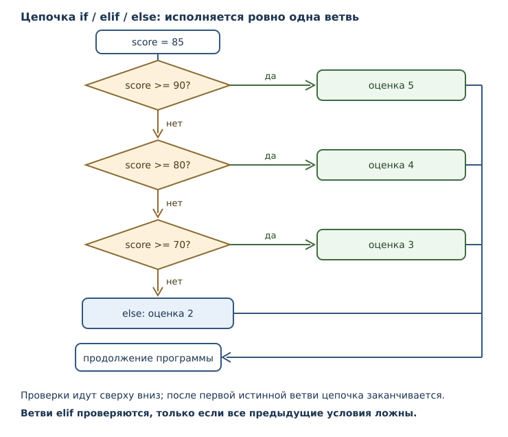
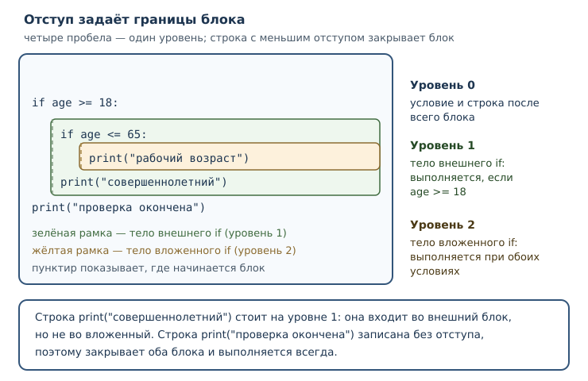

Логика и управление потоком
Истинность значений, условные конструкции, отступы и выбор ветви исполнения.
В этой главе
Программы из предыдущих глав шли по прямой: каждая инструкция выполнялась ровно один раз и в том порядке, в каком записана. Такая программа не умеет реагировать на входные значения — она всегда делает одно и то же. Настоящее поведение начинается там, где появляется выбор: если возраст меньше 18, продать билет со скидкой; если сумма заказа больше тысячи, добавить доставку бесплатно; если ввели пустую строку, попросить повторить ввод.
Для выбора нужны две вещи: условие, которое может быть истинным или ложным, и
инструкция, которая решает, какой блок кода выполнить. В этой главе появятся
if, elif и else, а вместе с ними — отступы, которые в Python входят в
синтаксис и определяют границы блоков.
5.1 Что вы сможете после этой главы
К концу главы вы будете уметь следующее.
- понимать, как Python трактует значение в логическом контексте;
- писать ветвления с одной, двумя и многими ветвями;
- объяснять, почему отступ — часть синтаксиса, а не украшение;
- выбирать между вложенными условиями и цепочкой проверок;
- записывать простое ветвление одним условным выражением;
- читать сообщения об ошибках отступов и исправлять их.
5.2 Истинность значения
Логические операторы and и or из главы 4 возвращали не обязательно True
или False, а один из операндов. Причина в том, что Python умеет трактовать
любое значение как истинное или ложное. Это правило называется истинность
значения.
Ложными в логическом контексте считаются:
- число
0и0.0— любое нулевое число; - пустая строка
""; - значение
None; - сам
False; - пустые коллекции — с ними мы познакомимся в части 3.
Все остальные значения истинны. Важно, что «нулеподобность» текста не
работает: строка "0" истинна, потому что это непустая строка, а не число.
Строка " " из одного пробела тоже истинна.
Проверить правило можно встроенной функцией bool, которая возвращает
логическое значение для своего аргумента:
print(bool(0), bool(1), bool(-1))
print(bool(0.0), bool(0.0001))
print(bool(""), bool(" "), bool("0"), bool("False"))
print(bool(None), bool(False), bool(True))
False True True
False True
False True True True
False False True
Вторая строка показывает, что 0.0001 истинно, хотя число очень маленькое:
важен только ноль. Третья строка — источник ошибок: любая непустая строка
истинна, даже если изображает ноль или слово «False».
Практическое следствие: проверка if value: короче, но она не различает
«значение равно нулю» и «значения нет». Если ноль — допустимое значение,
пишите явно: if value != 0: или if value is not None:. Явное сравнение
сообщает читателю, что именно вы проверяете, и не зависит от того, помнит ли
он правило истинности.
Есть случай, где краткая проверка уместна и даже полезна: пустой ввод. Функция
input возвращает строку, и человек может нажать Enter, ничего не набрав. Тогда
значение равно "", а это как раз ложное значение, поэтому if raw: читается
естественно: «если что-то введено». Но и здесь полезно назвать намерение
словами в комментарии или в имени переменной, чтобы следующий читатель не
гадал, проверяете вы пустоту или ноль.
5.3 Инструкция if
Инструкция if выполняет блок кода только тогда, когда её условие истинно. Условие — любое выражение; его результат трактуется по правилу истинности. После условия ставится двоеточие, а тело записывается с отступом.
age = 20
if age >= 18:
print("доступ разрешён")
print("проверка завершена")
доступ разрешён
проверка завершена
Блок — группа инструкций, которую исполняют как единое целое. В Python
блок выделяется отступом: строки с одинаковым отступом после if относятся к
его телу. Строка без отступа к блоку не относится и выполняется всегда — в
примере это print("проверка завершена").
Если условие ложно, тело пропускается целиком:
age = 15
if age >= 18:
print("доступ разрешён")
print("проверка завершена")
проверка завершена
Обратите внимание: программа не «сломалась» и не сообщила об ошибке. Ложное условие — обычная ситуация, а не исключительная.
Тело может состоять из нескольких инструкций: все они выполняются или пропускаются вместе.
x = 10
if x > 5:
print("больше пяти")
print("вторая строка блока")
print("вне блока")
больше пяти
вторая строка блока
вне блока
5.4 Ветви elif и else
Одной ветви часто мало: нужно не только сделать что-то при выполнении условия, но и предусмотреть противоположный случай. Ветвь else задаёт блок, который исполняется, когда условие ложно.
x = 3
if x > 5:
print("больше пяти")
else:
print("не больше пяти")
не больше пяти
Ветвь elif добавляет ещё одну проверку, которая выполняется только тогда,
когда все предыдущие условия оказались ложными. Цепочка может быть длинной.
Исполняется первая ветвь, чьё условие истинно: если в цепочке есть else,
ровно одна ветвь исполнится всегда, а без else при всех ложных условиях не
исполнится ни одна.
score = 85
if score >= 90:
print("оценка 5")
elif score >= 80:
print("оценка 4")
elif score >= 70:
print("оценка 3")
else:
print("оценка 2")
оценка 4
Порядок ветвей стал частью логики. Если поставить более мягкое условие первым, до строгого очередь не дойдёт:
score = 85
if score >= 70:
print("зачёт")
elif score >= 90:
print("отлично")
зачёт
Второе условие здесь недостижимо: любое число, для которого истинно
score >= 90, истинно и для score >= 70, поэтому первая ветвь всегда
сработает раньше. Это не ошибка синтаксиса — программа работает, но ведёт себя
не так, как ожидал автор. Проверяя цепочку elif, читайте её сверху вниз и
спрашивайте: может ли эта ветвь вообще выполниться?

5.5 Отступы и блоки
В большинстве языков границы блока задают фигурными скобками, а отступы нужны только людям. В Python наоборот: отступ — ведущие пробелы в начале строки — определяет, к какому блоку относится инструкция. Это решение языка, а не соглашение оформителей, поэтому неверный отступ делает программу неверной.
Основные правила:
- Тело
if,elifиelseзаписывается с отступом больше, чем строка с условием. - Все строки одного блока имеют одинаковый отступ.
- Блок заканчивается там, где отступ уменьшается.
- Вложенные блоки получают ещё один уровень отступа.
Рекомендация PEP 8 — четыре пробела на уровень. Это именно рекомендация стиля: язык принимает и два пробела, и три. Но смешивать табуляцию и пробелы нельзя — Python 3 считает это ошибкой.

Посмотрим, что происходит, когда отступ потерян или лишний. В первом примере
после if нет тела:
if True:
print("нет отступа")
Во втором примере блок начался, но следующая строка неожиданно вернулась на прежний уровень, а затем снова ушла вправо:
if True:
print("первая строка")
print("отступ не совпадает")
Интерпретатор сообщает об ошибке отступа до запуска программы и указывает
строку. Текст сообщения зависит от версии Python, поэтому ориентируйтесь на тип
ошибки. Для первого случая это IndentationError, для смешения табуляции и
пробелов — TabError. Вот как выглядит такое сообщение (детали текста в разных
версиях отличаются):
File "program.py", line 2
print("нет отступа")
^
IndentationError: expected an indented block after 'if' statement on line 1
Полезная привычка: настраивать редактор так, чтобы он вставлял четыре пробела по Tab и показывал невидимые символы. Тогда ошибка отступа не появится вовсе.
Почему смешивать табуляцию и пробелы опасно: ширина табуляции зависит от настроек редактора. Один и тот же файл в разных программах выглядит по-разному, и человек видит один блок там, где интерпретатор видит другой. Пробелы такой двусмысленности не создают: четыре пробела — всегда четыре пробела. Отсюда правило: в одном файле либо только пробелы, либо только табуляция, и для Python принято первое.
5.6 Как формулировать условие
Условие читают люди, а исполняет машина. Поэтому формулировка важна не меньше, чем синтаксис. Несколько правил, которые экономят время при отладке.
Формулируйте утвердительно. if age >= 18: читается легче, чем
if not age < 18:, хотя это одно и то же. Отрицание заставляет читателя
выполнить в уме ещё один шаг.
Не сравнивайте с True и False. Запись if is_ready == True: избыточна:
само имя уже логическое значение, и if is_ready: делает то же самое. Сравнение
с False вдвойне опасно: if is_ready == False: легко превращается в
if is_ready = False: при невнимательной правке, а такая ошибка не всегда
заметна сразу.
Помните о законах де Моргана. Отрицание связки меняет оператор:
not (a and b)равносильно(not a) or (not b);not (a or b)равносильно(not a) and (not b).
Проверим на конкретных значениях:
a = True
b = False
print(not (a and b), (not a) or (not b))
print(not (a or b), (not a) and (not b))
True True
False False
Совпадение не случайно: это тождество логики, а не особенность Python. Оно
позволяет переписать непонятное условие в понятное. Например,
not (age < 18 or age > 65) превращается в age >= 18 and age <= 65, а это
уже цепочка сравнений 18 <= age <= 65.
5.7 Вложенные условия и порядок проверок
Одно условие может стоять внутри другого. Это нужно, когда второе решение имеет смысл только после первого.
a = 1
b = 2
if a == 1:
if b == 2:
print("оба условия истинны")
оба условия истинны
Вложенность работает, но у неё есть цена: каждый уровень добавляет отступ и усложняет чтение. Часто вложенное условие можно заменить одним составным — и тогда код становится плоским:
a = 1
b = 2
if a == 1 and b == 2:
print("оба условия истинны")
оба условия истинны
Результат тот же, а уровней стало меньше. Логическая связка and здесь
работает и как соединение условий, и как
сокращённое вычисление: если a == 1
ложно, вторая часть не проверяется.
Выбирайте форму по смыслу:
- Составное условие — когда важны все условия сразу и между ними нет иерархии.
- Вложенное условие — когда вторая проверка осмысленна только внутри первой, а между ветвями есть собственная логика.
- Цепочка
elif— когда есть несколько взаимоисключающих вариантов.
Три уровня вложенности — сигнал, что стоит разбить задачу на части. Инструмент для этого появится в главе 7: функции позволят вынести проверку в отдельное имя и вернуть результат.
5.8 Условное выражение
Иногда нужно не выполнить блок, а выбрать одно из двух значений. Для этого
служит условное выражение — выражение вида A if условие else B. Оно
вычисляет A, если условие истинно, и B в противном случае, а результатом
служит выбранное значение.
x = 7
print("чётное" if x % 2 == 0 else "нечётное")
нечётное
Условное выражение можно присвоить имени или вставить в f-строку:
age = 15
status = "совершеннолетний" if age >= 18 else "несовершеннолетний"
print(f"Статус: {status}")
Статус: несовершеннолетний
Обратите внимание на порядок слов: сначала идёт значение для истинного случая,
потом условие, потом значение для ложного. Это отличается от if-инструкции,
где условие стоит первым. Читайте такую запись как вопрос: «какое из двух
значений взять, если условие истинно?».
Условные выражения можно соединять в цепочку, но злоупотреблять этим не стоит:
temperature = 5
print("холодно" if temperature < 0 else "прохладно" if temperature < 15 else "тепло")
прохладно
Работает, но читается хуже, чем цепочка elif. Правило простое: если
выбирается значение — берите условное выражение; если выполняются действия —
берите if. Смешивать не нужно.
5.9 Собираем вместе
Задача: посчитать стоимость доставки по весу посылки. До 1 кг — 300 рублей, до 5 кг — 500 рублей, тяжелее — 800 рублей плюс 100 рублей за каждый килограмм сверх пяти.
raw_weight = input("Вес посылки, кг: ")
weight = float(raw_weight)
if weight <= 1:
delivery = 300
elif weight <= 5:
delivery = 500
else:
over = weight - 5
extra = int(over) + (1 if over > int(over) else 0)
delivery = 800 + 100 * extra
print(f"Вес: {weight} кг, доставка: {delivery} рублей")
int(over) считает полные килограммы сверх пяти, а добавка 1 нужна, когда
остаток не целый: за начатый килограмм платят как за целый.
Проверим ту же логику на нескольких значениях, чтобы увидеть все ветви:
raw_weight = "3.2"
weight = float(raw_weight)
if weight <= 1:
delivery = 300
elif weight <= 5:
delivery = 500
else:
over = weight - 5
extra = int(over) + (1 if over > int(over) else 0)
delivery = 800 + 100 * extra
print(f"Вес: {weight} кг, доставка: {delivery} рублей")
Вес: 3.2 кг, доставка: 500 рублей
weight = 6.4
if weight <= 1:
delivery = 300
elif weight <= 5:
delivery = 500
else:
over = weight - 5
extra = int(over) + (1 if over > int(over) else 0)
delivery = 800 + 100 * extra
print(f"Вес: {weight} кг, доставка: {delivery} рублей")
Вес: 6.4 кг, доставка: 1000 рублей
Проверим целый вес чуть больше пяти — здесь легко ошибиться на единицу:
weight = 6.0
if weight <= 1:
delivery = 300
elif weight <= 5:
delivery = 500
else:
over = weight - 5
extra = int(over) + (1 if over > int(over) else 0)
delivery = 800 + 100 * extra
print(f"Вес: {weight} кг, доставка: {delivery} рублей")
Вес: 6.0 кг, доставка: 900 рублей
В рабочей программе к этому коду добавилась бы защита от неверного ввода:
float("шесть") завершится ошибкой ValueError, а пустая строка не даст
числа вовсе. Проверить ввод заранее можно так:
raw_weight = input("Вес посылки, кг: ")
if raw_weight == "":
print("вес не указан")
else:
weight = float(raw_weight)
print(f"Принят вес {weight} кг")
Такая проверка не заменяет обработку ошибок из главы 10, но отсекает самый частый случай — пустой ввод.
Разберём случай с весом 6.4: он больше пяти, поэтому работает else.
Разница 6.4 - 5 = 1.4 кг; int(1.4) даёт 1 полный килограмм, а поскольку
остаток 0.4 не равен нулю, добавляется ещё один — итого 2 оплачиваемых
килограмма сверх пяти, 800 + 200 = 1000 рублей. Для ровно 6.0 кг остаток
равен нулю, добавки нет, и выходит 800 + 100 = 900 рублей. Здесь int
использован осознанно: вес может быть дробным, а плата считается целыми
рублями, причём начатый килограмм оплачивается целиком.
5.10 Разбор: игра «угадай число»
Адаптировано из книги «A Byte of Python» (Swaroop C H, лицензия CC BY-SA 4.0,
ревизия 84f4dd8): текст переведён и отредактирован, структура разбора
сохранена. Изменения: сокращены повторы, добавлены запускаемые примеры и
русские сообщения, интерактивный ввод заменён заранее заданными значениями.
Условная логика особенно наглядна в программе, которая сравнивает догадку человека с загаданным числом. Полный интерактивный вариант выглядит так:
number = 23
raw = input("Угадайте число: ")
guess = int(raw)
if guess == number:
print("Поздравляю, вы угадали!")
elif guess < number:
print("Немного больше")
else:
print("Немного меньше")
print("Игра окончена")
Порядок проверок здесь принципиален. Сначала сравнивается равенство: если
догадка совпала, остальные ветви не проверяются вовсе. Если нет — программа
выясняет, в какую сторону ошибся человек, и сообщает, куда двигаться. Ветвь
else срабатывает только тогда, когда не подошли ни if, ни elif.
Чтобы увидеть каждую ветвь, запустим ту же логику с заранее заданными догадками. Первая догадка меньше загаданного числа:
number = 23
guess = int("10")
if guess == number:
print("Поздравляю, вы угадали!")
elif guess < number:
print("Немного больше")
else:
print("Немного меньше")
Немного больше
Вторая догадка совпадает:
number = 23
guess = int("23")
if guess == number:
print("Поздравляю, вы угадали!")
elif guess < number:
print("Немного больше")
else:
print("Немного меньше")
Поздравляю, вы угадали!
Третья догадка больше загаданного числа, поэтому работает else:
number = 23
guess = int("50")
if guess == number:
print("Поздравляю, вы угадали!")
elif guess < number:
print("Немного больше")
else:
print("Немного меньше")
Немного меньше
Обратите внимание на две детали, которые часто упускают. Во-первых, int(raw)
преобразует строку в число. Без него "10" == 23 дало бы False,
но проверка порядка "10" < 23 вызвала бы TypeError: строку и целое число
нельзя напрямую упорядочивать. Преобразование нужно до ветвления;
некорректный ввод обрабатывают отдельно (см. главу 10). Во-вторых, порядок ветвей elif можно менять, только если
условия не пересекаются; здесь они упорядочены по возрастанию сложности
проверки, и каждая следующая ветвь рассматривает всё более узкий случай.
Источник и характер изменений зафиксированы в provenance/05-control-flow.yaml.
5.11 Типичные ошибки
- Забыть двоеточие. После условия и после
elseдвоеточие обязательно; без него программа не разбирается. - Потерять отступ. Тело условия обязано быть сдвинуто вправо. Это ошибка разбора, а не предупреждение.
- Смешать табуляцию и пробелы. Визуально отступы могут выглядеть
одинаково, но Python сообщит
TabError. Настройте редактор на пробелы. - Использовать
=вместо==.if x = 5:— синтаксическая ошибка; сравнение записывается двойным знаком. - Путать
ifиelif. Две независимые инструкцииifпроверяют оба условия, а цепочкаelif— только до первого истинного. Результаты различаются, если условия не исключают друг друга. - Ставить мягкое условие раньше строгого. В цепочке
elifдо строгой ветви очередь может не дойти. - Проверять число через
if value:. Ноль — допустимое значение, но оно ложно. Если ноль возможен, сравнивайте явно. - Ожидать, что
bool("0")дастFalse. Непустая строка истинна; преобразование текста в число делаетint, а неbool.
5.12 Упражнения
1. Что напечатается
Какие строки выведет программа? Запишите ответ, затем проверьте.
x = 12
if x > 10:
print("больше десяти")
print("проверка окончена")
if x < 10:
print("меньше десяти")
2. Истинность значений
Не запуская код, определите результаты: bool(0), bool("0"), bool(""),
bool(" "), bool(None), bool(-1), bool(0.0). Затем проверьте и объясните
каждое значение.
3. Исправление отступа
Программа не запускается:
age = 20
if age >= 18:
print("доступ разрешён")
Объясните причину и запишите исправленный вариант. Почему 0 пробелов — ошибка, а 2 или 8 — синтаксически допустимы, хотя PEP 8 рекомендует 4?
4. Порядок ветвей
Дана цепочка:
grade = 75
if grade >= 60:
print("удовлетворительно")
elif grade >= 90:
print("отлично")
elif grade >= 75:
print("хорошо")
Что выведет программа? Почему ветви отлично и хорошо не работают так, как
задумано? Исправьте порядок условий.
5. Три случая
Напишите программу, которая для числа n выводит положительное,
отрицательное или ноль. Проверьте на значениях 7, -3, 0.
6. Плоская форма
Перепишите код, избавившись от вложенности:
age = 25
if age >= 18:
if age <= 65:
print("рабочий возраст")
Результат должен сохраниться. Объясните, какое условие получилось и почему эквивалентность сохраняется.
7. Условное выражение
Перепишите выбор значения одним условным выражением:
limit = 100
if limit > 50:
message = "большой лимит"
else:
message = "маленький лимит"
Затем выведите message через f-строку.
8. Ошибка с одним знаком
Почему программа не запускается? Исправьте её и объясните, чем = отличается
от ==.
x = 5
if x = 5:
print("пять")
9. Билеты по возрасту
Цена билета: до 6 лет — бесплатно, от 6 до 17 — 300 рублей, от 18 до 64 — 600
рублей, от 65 — 200 рублей. Напишите программу, которая получает возраст
строкой, преобразует его в целое и печатает цену через f-строку. Проверьте на
возрастах 5, 12, 30, 70.
10. Два if или elif
Сравните две программы:
x = 150
if x > 100:
print("больше ста")
if x > 50:
print("больше пятидесяти")
x = 150
if x > 100:
print("больше ста")
elif x > 50:
print("больше пятидесяти")
Сколько строк выведет каждая? Объясните разницу и скажите, в каком случае
цепочка elif уместна и читается лучше.
5.13 Проверка понимания
- Какие значения Python считает ложными? Почему
bool("0")даётTrue? - Чем условие отличается от обычного выражения?
- Что такое блок и как Python определяет его границы?
- Почему отступ в Python — часть синтаксиса, а не оформление?
- Чем цепочка
elifотличается от нескольких независимыхif? - Почему порядок ветвей в цепочке
elifважен? - Когда выбирать условное выражение, а когда — инструкцию
if? - Чем
IndentationErrorотличается отTabErrorпо причине возникновения?
5.14 Что дальше
Теперь программа умеет выбирать путь. Но каждая ветвь всё ещё исполняется один раз: чтобы обработать сто заказов, пришлось бы сто раз повторить код. Дальше появятся циклы — механизм, который повторяет блок, пока условие истинно, и позволяет обрабатывать данные любого объёма.